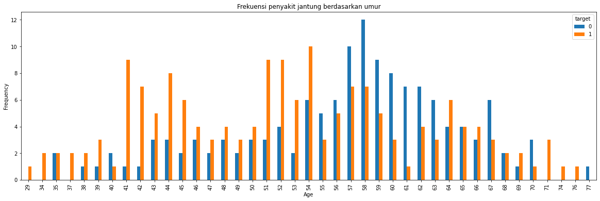
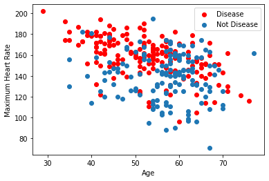

Projek Aplikasi
Contents
Projek Aplikasi#
import numpy as np
import pandas as pd
import matplotlib.pyplot as plt
import seaborn as sns
from sklearn.linear_model import LogisticRegression
from sklearn.model_selection import train_test_split
df = pd.read_csv("https://raw.githubusercontent.com/FajarAndrianto037/data/main/Heart_Disease_Dataset.csv")
df.head()
| age | sex | cp | trestbps | chol | fbs | restecg | thalach | exang | oldpeak | slope | ca | thal | target | |
|---|---|---|---|---|---|---|---|---|---|---|---|---|---|---|
| 0 | 63 | 1 | 3 | 145 | 233 | 1 | 0 | 150 | 0 | 2.3 | 0 | 0 | 1 | 1 |
| 1 | 37 | 1 | 2 | 130 | 250 | 0 | 1 | 187 | 0 | 3.5 | 0 | 0 | 2 | 1 |
| 2 | 41 | 0 | 1 | 130 | 204 | 0 | 0 | 172 | 0 | 1.4 | 2 | 0 | 2 | 1 |
| 3 | 56 | 1 | 1 | 120 | 236 | 0 | 1 | 178 | 0 | 0.8 | 2 | 0 | 2 | 1 |
| 4 | 57 | 0 | 0 | 120 | 354 | 0 | 1 | 163 | 1 | 0.6 | 2 | 0 | 2 | 1 |
Data contains;
age - age in years
sex - (1 = male; 0 = female)
cp - chest pain type
trestbps - resting blood pressure (in mm Hg on admission to the hospital)
chol - serum cholestoral in mg/dl
fbs - (fasting blood sugar > 120 mg/dl) (1 = true; 0 = false)
restecg - resting electrocardiographic results
thalach - maximum heart rate achieved
exang - exercise induced angina (1 = yes; 0 = no)
oldpeak - ST depression induced by exercise relative to rest
slope - the slope of the peak exercise ST segment
ca - number of major vessels (0-3) colored by flourosopy
thal - 3 = normal; 6 = fixed defect; 7 = reversable defect
target - have disease or not (1=yes, 0=no)
print(df.target.value_counts())
sns.countplot(x="target", data=df)
plt.show()
countNoDisease = len(df[df.target == 0])
countHaveDisease = len(df[df.target == 1])
print("Persentase pasien tidak memiliki penyakit jantung: {:.2f}%".format((countNoDisease / (len(df.target))*100)))
print("Persentase pasien memiliki penyakit jantung: {:.2f}%".format((countHaveDisease / (len(df.target))*100)))
1 165
0 138
Name: target, dtype: int64
Persentase pasien tidak memiliki penyakit jantung: 45.54%
Persentase pasien memiliki penyakit jantung: 54.46%
df.groupby('target').mean()
| age | sex | cp | trestbps | chol | fbs | restecg | thalach | exang | oldpeak | slope | ca | thal | |
|---|---|---|---|---|---|---|---|---|---|---|---|---|---|
| target | |||||||||||||
| 0 | 56.601449 | 0.826087 | 0.478261 | 134.398551 | 251.086957 | 0.159420 | 0.449275 | 139.101449 | 0.550725 | 1.585507 | 1.166667 | 1.166667 | 2.543478 |
| 1 | 52.496970 | 0.563636 | 1.375758 | 129.303030 | 242.230303 | 0.139394 | 0.593939 | 158.466667 | 0.139394 | 0.583030 | 1.593939 | 0.363636 | 2.121212 |
pd.crosstab(df.age,df.target).plot(kind="bar",figsize=(20,6))
plt.title('Frekuensi penyakit jantung berdasarkan umur')
plt.xlabel('Age')
plt.ylabel('Frequency')
plt.savefig('heartDiseaseAndAges.png')
plt.show()

plt.scatter(x=df.age[df.target==1], y=df.thalach[(df.target==1)], c="red")
plt.scatter(x=df.age[df.target==0], y=df.thalach[(df.target==0)])
plt.legend(["Disease", "Not Disease"])
plt.xlabel("Age")
plt.ylabel("Maximum Heart Rate")
plt.show()

model regression#
y = df.target.values
x_data = df.drop(['target'], axis = 1)
# Normalize
x = (x_data - np.min(x_data)) / (np.max(x_data) - np.min(x_data)).values
x_train, x_test, y_train, y_test = train_test_split(x,y,test_size = 0.2,random_state=0)
#transpose matrices
x_train = x_train.T
y_train = y_train.T
x_test = x_test.T
y_test = y_test.T
accuracies = {}
lr = LogisticRegression()
lr.fit(x_train.T,y_train.T)
acc = lr.score(x_test.T,y_test.T)*100
print("Test Accuracy {:.2f}%".format(acc))
Test Accuracy 83.61%
KNN#
from sklearn.neighbors import KNeighborsClassifier
knn = KNeighborsClassifier(n_neighbors = 2) # n_neighbors means k
knn.fit(x_train.T, y_train.T)
prediction = knn.predict(x_test.T)
print("{} NN Score: {:.2f}%".format(2, knn.score(x_test.T, y_test.T)*100))
2 NN Score: 83.61%
# mencoba mencari score knn terbaik dengan 20 kali coba
scoreList = []
for i in range(1,20):
knn2 = KNeighborsClassifier(n_neighbors = i) # n_neighbors means k
knn2.fit(x_train.T, y_train.T)
scoreList.append(knn2.score(x_test.T, y_test.T))
# plt.plot(range(1,20), scoreList)
# plt.xticks(np.arange(1,20,1))
# plt.xlabel("K value")
# plt.ylabel("Score")
# plt.show()
acc = max(scoreList)*100
accuracies['KNN'] = acc
print("Maximum KNN Score is {:.2f}%".format(acc))
Maximum KNN Score is 90.16%
Naive Bayes#
from sklearn.naive_bayes import GaussianNB
nb = GaussianNB()
nb.fit(x_train.T, y_train.T)
acc = nb.score(x_test.T,y_test.T)*100
accuracies['Naive Bayes'] = acc
print("Accuracy of Naive Bayes: {:.2f}%".format(acc))
Accuracy of Naive Bayes: 85.25%